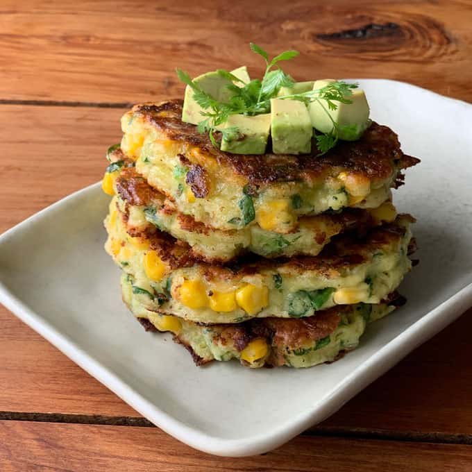
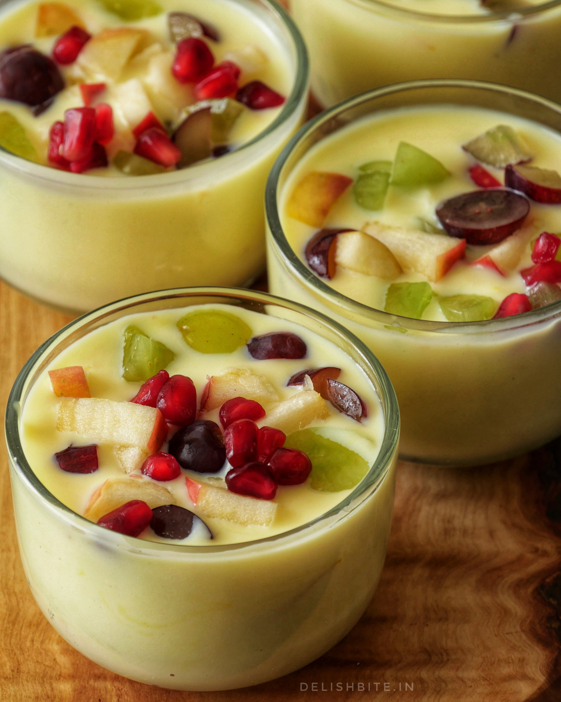

Top Recipes

Spinach $ Corn Pancakes

Fruit Custard

Discover fresh, seasonal recipes straight from the farm to your table, supporting local and sustainable eating.
Upma is a popular South Indian breakfast dish made from semolina (also called rava or sooji). It is typically prepared by roasting the semolina and cooking it with a flavorful mix of spices, vegetables, and sometimes nuts. The dish has a savory taste and is often served with chutney or sambar on the side.
Paneer Bhurji is a delicious and flavorful Indian dish made from crumbled paneer (Indian cottage cheese), sautéed with spices, vegetables, and herbs. It’s easy to make and can be served with parathas, chapatis, or as a side dish.
Recipes which are healthy ,tasty and easy to cook


© copyright 2024 FARM AND FRESH| All rights reserved